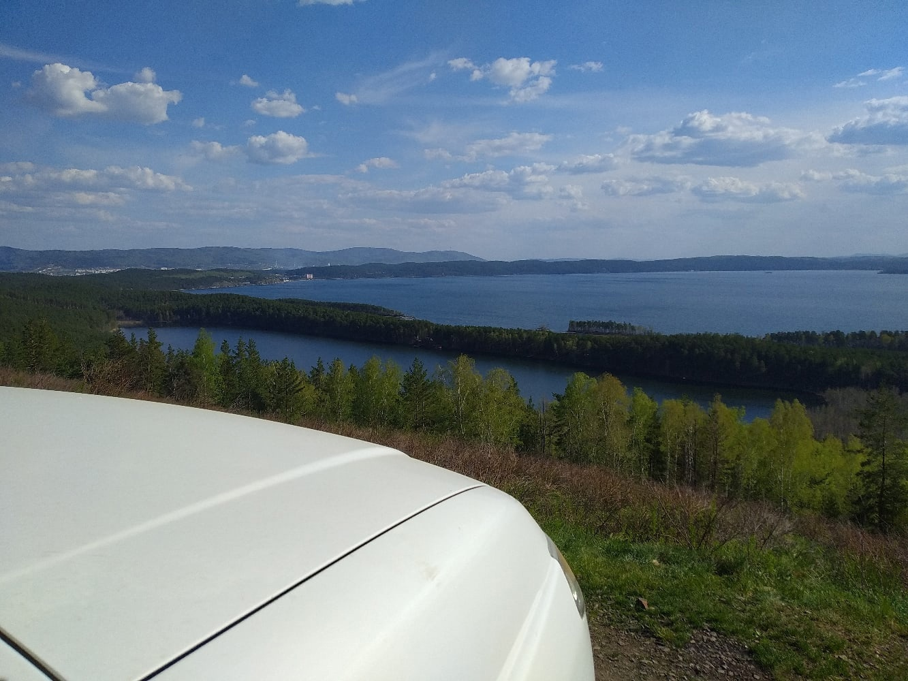
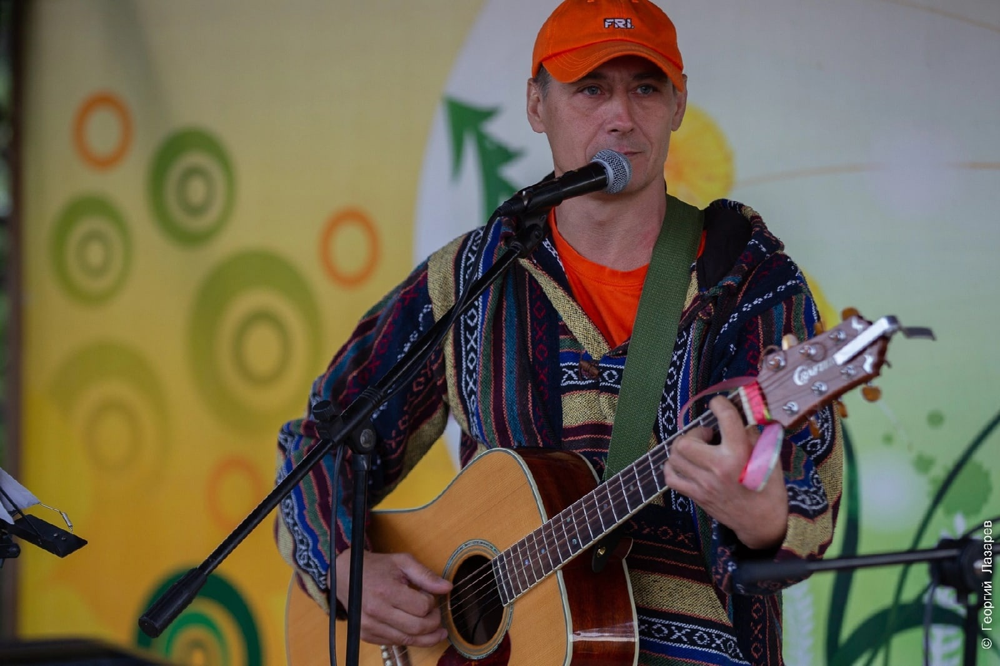

Немного о моих увлечениях
Природа
Очень
рад и счастлив, что живу среди прекрасных Уральских гор, в крае голубых озёр.
Если у Вас есть
желание
увидеть красивейшие и интересные места южного Урала. то я с радостью готов этим поделиться!!!
Даже
один день общения с природой помогает ощутить себя свободным, почувствовать внутреннюю гармонию,
расслабиться и отдохнуть!
Уверен что наши места Вас не остаят равнодушными )))
Музыка
90-е года - ну как тут без нашего
Русского рока ... )) Ну а любовь к природе, к походам - тут никак не обойтись без бардовской песни.
И
вот на стыке таких, казалось бы, разных вещей появляется такой стиль, как
В
общем люблю хорошие песни со смыслом!
А когда втягиваешься, то тут уже в стороне не получается остаться )))